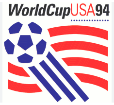
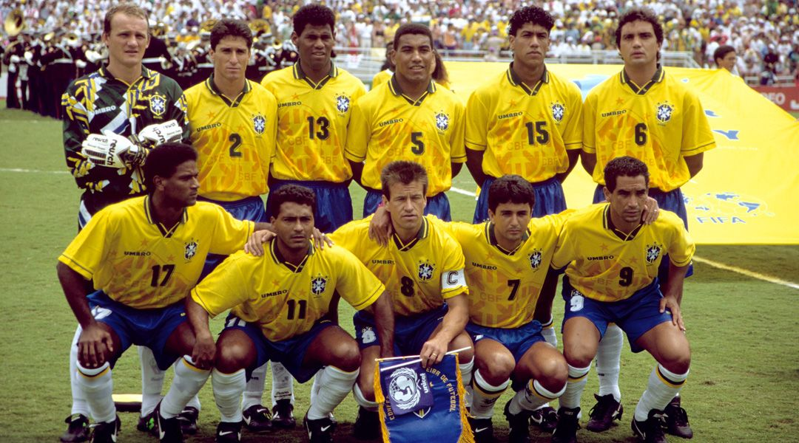

COPA DO MUNDO DE 1994

historia da copa do mundo de 1994
Em 1994, a Copa do Mundo voltou a ser disputada na América do Norte. Depois de popularizar o futebol por
praticamente todo o mundo, faltava à Fifa desbravar o concorrido mercado americano. Apesar de o beisebol, o
futebol americano, o basquetebol e o hóquei sobre o gelo concentrarem a preferência do povo estadunidense, a
Fifa optou por apostar na candidatura dos EUA, que sediaram o Mundial.
Mesmo com a falta de tradição norte-americana no futebol, foi esta edição que, à época, bateu todos os
recordes de público, mantidos entre as melhores médias da história das copas.
A edição americana foi um sucesso, mas ao mesmo tempo foi palco de tristes episódios. A grande decepção
ficou por conta de Diego Armando Maradona. O meia argentino foi flagrado no exame anti-doping da partida
contra a Nigéria. Outro triste desdobramento se deu no jogo entre Estados Unidos e Colômbia, onde Andrés
Escobar marcou um gol contra, e, ao retornar a Medellín onde morava, foi assassinado em um restaurante.
Em contrapartida, Roger Milla entrou no hall de recordes como o atleta mais velho a comemorar um gol em
Copas do Mundo. Aos 42 anos, o camaronês balançou as redes no primeiro minuto da etapa complementar no duelo
contra a Rússia de Oleg Salenko, artilheiro do mundial com seis gols anotados ao lado do búlgaro Hristo
Stoitchkov.
A edição foi aberta no estádio Soldier Field, em Chicago, no dia 17 de junho, com direito a performance da
cantora Diana Ross. No mesmo dia, aconteceu o jogo de abertura entre a Alemanha (sua primeira Copa
reunificada) contra a Bolívia. A seleção Alemã venceu o jogo por 1x0, com gol do atacante Jürgen Klinsmann.
Nesse jogo, o craque boliviano Marco Etcheverry recebeu o primeiro cartão vermelho da Copa, após agredir
Lothar Matthäus, fazendo jus ao apelido de "El Diablo". Estreante em copas, a Arábia Saudita mostrou ao
mundo do futebol a que veio no terceiro jogo contra a Bélgica. Após receber a bola do campo de sua equipe,
Saeed Al-Owairan decidiu partir para cima dos belgas e após driblar meio time, tocou na saída do experiente
goleiro Michel Preud'homme, um dos melhores do mundo na época e que seria eleito o melhor daquela Copa,
marcando o mais belo gol do Mundial.
 Romario,Bebeto e Mazinho comemorando um dos gols do torneio
Romario,Bebeto e Mazinho comemorando um dos gols do torneio
O Brasil estreou contra a Rússia em São Francisco. Aos 27 minutos, Romário abriu o placar com oportunismo. No
segundo tempo, Raí fez o último gol do jogo, cobrando pênalti sofrido por Romário. No segundo jogo, o Brasil
se soltou mais e ganhou com facilidade de Camarões por 3 a 0, com gols de Romário, Márcio Santos e Bebeto.
Fechando a primeira fase, a seleção brasileira enfrentou a Suécia em Detroit. Aos 23 minutos do primeiro
tempo Andresson fez o primeiro gol sueco. A Suécia se fechou dificultando a penetração do ataque brasileiro.
Mas no comecinho do segundo tempo, Romário marcou. O empate de 1 a 1 garantiu ao Brasil o primeiro lugar do
grupo, mas a seleção saiu de campo vaiada, sem convencer o torcedor brasileiro e a crítica.
Nas oitavas de final, os brasileiros enfrentaram os anfitriões do Mundial. O jogo estava marcado para 4 de
julho, o dia da independência dos Estados Unidos, e todo o marketing que promoveu a partida exaltava um
espírito nacionalista. Os americanos se prepararam para uma batalha. Depois de um jogo duríssimo, onde o
lateral Leonardo foi expulso por ter atingido deslealmente um jogador americano com uma fortíssima
cotovelada no rosto, o Brasil venceu por 1 a 0, com um gol de Bebeto, marcado a 15 minutos do final.
Nas quartas-de-final, contra a Holanda, a seleção brasileira fez sua melhor partida no mundial, vencendo por
3 a 2, com gols de Romário, Bebeto e do lateral Branco, em cobrança de falta, aos 36 minutos, desempatando o
jogo para o Brasil.
Na semifinal, o time brasileiro foi a Los Angeles para enfrentar a mesma Suécia com quem tinha empatado na
primeira fase. Os suecos voltaram a jogar trancados na defesa, o que exigiu muita cautela e paciência por
parte do Brasil para vencer por 1 a 0, com gol de Romário, marcado a menos de 15 minutos do final.
A final da Copa do Mundo FIFA de 1994 foi disputada em 17 de Julho no Rose Bowl, na cidade de Pasadena nos
Estados Unidos, entre a Seleção Italiana e a Seleção Brasileira. Jogada às 12:30, horário local, esta foi a
final da Copa do Mundo mais recente a ser disputada em plena luz do dia.
Brasil e Italia chegaram a grande decisao e ambas as equipes estavam em busca do Tetracampeonato Mundial, o
que lhes daria a hegemonia do futebol. Foi a
quinta vez que a Itália disputou uma Final de Copa do Mundo, e a quarta vez do Brasil, já que em 1950 não
houve uma final propriamente dita, e sim uma rodada final de um quadrangular. Foi também a segunda vez que
Brasil e Itália se confrontaram numa final (a outra foi em 1970), fazendo desta final a segunda disputada
por equipes que já haviam se confrontado em outras finais de Copa do Mundo, já que Argentina e Alemanha
haviam se enfrentado nas finais de 1986 e 1990.
Após 90 minutos de jogo no tempo normal e 30 minutos na prorrogação o jogo terminou empatado por 0 a 0,
fazendo desta a primeira final de Copa do Mundo decidida nos pênaltis. Além disso, esta segue sendo a única
final em que não houve gols no tempo normal.
Após a cobrança de 9 penalidades, o Brasil venceu a Itália por 3x2 nos pênaltis, e se tornou a primeira
seleção tetracampeã do mundo.
Com o vice-campeonato da Itália, o zagueiro Franco Baresi tornou-se o sexto jogador na história a conquistar
as medalhas de bronze, prata e de ouro em Copas do Mundo de futebol.
 Baggio perdendo o penalti que garantiu o tetra brasileiro
Baggio perdendo o penalti que garantiu o tetra brasileiro
Foi uma Copa do Mundo de grandes surpresas. A Bulgária, que até ali em 6 participações anteriores jamais
havia vencido um jogo de Copa do Mundo, superou grandes favoritos, sendo a 2.ª colocada em um grupo que
tinha a Argentina, além de eliminar em um jogo emocionante a Alemanha, até então a Campeã mundial defensora,
por 2x1 nas quartas de final. Chegou à semifinal e terminou em 4.º lugar.

Brasil Tetra-Campeao mundial
Estadios da copa 1950
Maracanã

Maraca, é um estádio de futebol localizado na Zona Norte da cidade brasileira do Rio de Janeiro.[6] Foi
inaugurado em 1950, inicialmente com o nome de Estádio Municipal, durante o mandato do então general de
divisão e prefeito do Distrito Federal do Rio de Janeiro Ângelo Mendes de Moraes, tendo sido utilizado na
Copa
do Mundo de Futebol daquele ano. Quando da sua inauguração, a capacidade oficial de 155 mil lugares fez o
Maracanã superar o Hampden Park, de Glasgow, e se tornar o maior estádio do mundo na época.
Desde então, o Maracanã foi palco de grandes momentos do futebol brasileiro e mundial, como o milésimo gol
de
Pelé, finais do Campeonato Brasileiro, Campeonato Carioca, Copa Libertadores da América, da primeira Copa do
Mundo de Clubes da FIFA e da Copa América de 2021, além de competições internacionais e partidas da Seleção
Brasileira.
O estádio foi um dos locais de competição dos Jogos Pan-Americanos de 2007, recebendo o futebol, as
cerimônias
de abertura e de encerramento. Igualmente sediou as partidas de futebol e as cerimônias de início e de
encerramento dos Jogos Olímpicos de Verão de 2016, ambos eventos realizados na cidade do Rio de Janeiro. Foi
também o palco das partidas finais da Copa das Confederações FIFA de 2013 e da Copa do Mundo FIFA de 2014.
Ao longo do tempo, no entanto, o estádio passou a assumir caráter de espaço multiúso ao receber outros
eventos
como espetáculos e partidas de outros esportes, como o voleibol em uma oportunidade. Após diversas obras de
modernização, a capacidade do estádio é de 78 838 espectadores, sendo o maior estádio do Brasil.
Rose Bowl

O Rose Bowl é um estádio localizado em Pasadena, subúrbio de Los Angeles, Califórnia (EUA). Sua capacidade
oficial é de 92 542 espectadores. Possui esse nome devido as mais de 100 variedades de rosas plantadas em
volta do estádio.O Rose Bowl é um dos dois estádios a sediar as finais de Copa do Mundo de futebol, tanto de
homens (em 1994, quando o Brasil venceu a Itália nos pênaltis), como de mulheres (em 1999, quando os Estados
Unidos venceram a China, também nos pênaltis); o outro é o Estádio Råsunda, na Suécia. A final de 1999
contou com 90.185 torcedores, recorde para eventos esportivos femininos, que só viria a ser batido na final
do futebol dos Jogos Pan-americanos de 2007 entre Brasil e Estados Unidos.
Stanford Stadium

O Stanford Stadium é um estádio localizado em Stanford, próximo a Palo Alto, California (EUA). É utilizado
pelo time universitário de futebol americano universitário Stanford Cardinal football pertencente a
Universidade de Stanford, já foi utilizado pelo time de futebol San Jose Earthquakes da MLS.
O estádio foi construído em 1921 em cinco meses no lugar do Stanford Field com capacidade inicial para
60.000 pessoas com 66 fileiras, sendo na éppoca o segundo maior estádio do país, atrás somente do Yale
Bowl,[1] em 1925 ganhou mais 10.200 lugares, em 1927 com a adição de mais 14 fileiras chegou a ter
capacidade para 85.500 torcedores, configuração que perdurou até 2005. Entre os anos de 2005 e 2006 foi
demolido e reconstruído, tendo atualmente capacidade para 50.000 torcedores.
Foi uma das sedes de jogos de futebol dos Jogos Olímpicos de Verão de 1984, uma das sedes da Copa do Mundo
FIFA de 1994 e da Copa do Mundo de Futebol Feminino de 1999.
Sediou, também, o Super Bowl XIX, disputado em 20 de janeiro de 1985 (San Francisco 49ers 38-16 Miami
Dolphins), em 1989 sediou uma partida da temporada regular da NFL do San Francisco 49ers após o Sismo de
Loma Prieta de 1989 ter danificado o Candlestick Park.
Pontiac Silverdome

O Pontiac Silverdome foi um estádio localizado no distrito de Pontiac, subúrbio de Detroit, Michigan (Estados
Unidos da América), foi inaugurado em 1975 com capacidade para 80.311 lugares e foi a casa do Detroit
Pistons (NBA) de 1978 até 1988 e do Detroit Lions (NFL) de 1975 até 2001.[1], foi demolido em dezembro de
2017.Inaugurado em 1975 como Pontiac Metropolitan Stadium (ou PonMet Stadium), sediou o All-Star Game da NBA
de 1979 (Oeste 134-129 Leste), o Super Bowl XVI da NFL (San Francisco 49ers 26-21 Cincinnati Bengals) e
alguns jogos da Copa do Mundo de 1994, sendo o primeiro estádio totalmente coberto utilizado na competição
(ver abaixo). Também foi a sede do WrestleMania III, que recebeu o recorde de público em uma arena Indoor,
com 93.173 pessoas; tal evento foi sediado pela World Wrestling Entertainement (WWE), empresa de Luta Livre
que tem como dono Vince McMahon.
Além de eventos esportivos, o Pontiac Silverdome também foi palco de grandes shows, como das bandas Led
Zeppelin e Rolling Stones e espetáculos de Elvis Presley. O Papa João Paulo II também rezou uma missa no
local.
O estádio caiu em decadência e ficou fechado de 2001 até 2010, quando recebeu eventos como um show de
Monster Trucks, uma partida de futebol e uma luta de boxe.
No dia 29 de maio de 2014, foi leiloado.
No final de 2017 o estádio foi demolido depois de sofrer com problemas como bolor, árvores crescendo no
gramado e sua cobertura severamente danificada por uma tempestade.
Giants Stadium

O Giants Stadium, também frequentemente chamado de The Meadowlands, foi o estádio sede do New York Giants e
do New York Jets, estes times de futebol americano da NFL, a liga de futebol americano profissional dos
Estados Unidos, e também sediava partidas de futebol do Red Bull New York da MLS, liga profissional
americana de futebol. Foi demolido em 2010, ao custo de mais de 10 milhões de dólares e quatro meses de
destruição. O local do estádio hoje é o estacionamento do MetLife Stadium, atual casa dos Giants e do
Jets - o New York Red Bulls se mudou para a Red Bull Arena, em Harrison. Ele foi demolido em 2010.
Ele era localizado em East Rutherford, New Jersey, mais precisamente no Meadowlands Sports Complex, que
também compreende o circuito de corridas Meadowlands Racetrack e o ginásio Izod Center. Cabiam por volta de
80.242 pessoas sentadas, sendo assim o segundo maior estádio da NFL, perdendo somente para FedEx Field,
localizada em Washington, D.C.
O estádio sediou 7 jogos da Copa do Mundo de 1994, 4 Jogos da Copa do Mundo de Futebol Feminino de 1999,
algumas partidas da Copa Ouro, além de ser o estádio com maior número de partidas de futebol americano entre
os atuais da NFL
Cotton Bowl

O Cotton Bowl é um estádio localizado em Dallas, Texas (EUA). Construído em 1932, foi a casa dos times de
futebol americano Dallas Cowboys da NFL entre 1960 a 1971 e do Dallas Texans entre 1960 e 1962, também foi
casa do time de futebol FC Dallas da MLS entre 1996 e 2002 e entre 2004 e 2005.
De propriedade da Prefeitura de Dallas, o estádio atualmente recebe eventos esportivos universitários e de
menor importância.
Com 68.252 lugares, existem projetos para sua ampliação para 92.107 lugares e modernização.
Recebeu 6 jogos da Copa do Mundo de 1994.
Soldier Field

O Soldier Field e um estádio localizado em Chicago, Illinois (Estados Unidos). É a casa do time de futebol
americano Chicago Bears, da NFL e até 2005 foi casa do time de futebol Chicago Fire, da MLS.
Começou a ser construído em 1922, sendo inaugurado em 9 de Outubro de 1924. Em 19 de Janeiro de 2002 foi
fechado para uma ampla reforma, sendo reinaugurado em 29 de Setembro de 2003. Por isso, muitos fãs o chamam
de New Soldier Field. Atualmente tem capacidade para 61 500 lugares.
O campo serve como Memorial aos soldados americanos mortos em Combate. Ele foi projetado em 1919 e
inaugurado com o nome de Municipal Grant Park Stadium, mas foi mudado para Soldier Field no ano seguinte.
O desenho da fachada, com colunas em estilo Greco-Romano permaneceu após a ultima reforma, gerou o que o
cronista esportivo Jay Mariotti definiu como "Uma espaçonave dentro do Parthenon".
Em 1956 recebeu uma corrida da principal categoria da NASCAR.[3] Desde 1987 faz parte do Registro Nacional
de Lugares Históricos (órgão similar ao Instituto do Patrimônio Histórico e Artístico Nacional do Brasil) e
também do Marco Histórico Nacional. Entretanto em 2006 foi decidido em reunião do Comitê da Organização pela
retida do estádio da lista de Marco Histórico Nacional, devido as modernizações recentes.
Recebeu 5 jogos da Copa do Mundo de 1994 e 4 jogos da Copa do Mundo de Futebol Feminino de 1999. Também foi
utilizado nos Jogos Pan-americanos de 1959.
Citrus Bowl

O Camping World Stadium (antigamente conhecido como Orlando Stadium, Tangerine Bowl, Florida Citrus Bowl e
Orlando Citrus Bowl) é um estádio localizado em Orlando, Florida. Construído para o futebol americano, tem
capacidade para 65.438 torcedores. O estádio foi inaugurado em 1936 com 10.000 lugares. Sempre foi casa dos
times de futebol americano universitários locais.
Recebeu vários shows, como: The Who, Pink Floyd, Rolling Stones, Guns N' Roses e Paul McCartney.
Recebeu alguns jogos da Copa do Mundo de 1994 e algumas partidas do torneio de futebol dos Jogos Olímpicos
de Verão de 1996. Em 2008 recebeu o Wrestlemania 24, evento de luta livre da WWE. Nesse evento aconteceu o
recorde de público do estádio: 74,348, pois num show de luta-livre, a área do campo pode ser usada pelo
público. Em 2017, o Camping World Stadium recebeu a Wrestlemania 33.
Atualmente também é usado para o futebol, sendo a casa do Orlando City.
Foxboro Stadium

O Foxboro Stadium (ou Foxborough Stadium) foi um estádio multiúso localizado em Foxborough, estado de
Massachusetts, nos Estados Unidos. Construído em 1971, foi a casa do time de futebol americano da NFL New
England Patriots até 2002 e do time de futebol New England Revolution da MLS de 1992 a 2002.
O estádio recebeu o nome de Schaefer Stadium (num contrato de naming rights com uma cervejaria) e de
Sullivan Stadium (em homenagem a família que por muitos anos administrou o New England Patriots).
Várias bandas se apresentaram no Foxboro Stadium, entre elas: U2, The Rolling Stones, Pink Floyd e The Who.
Foi sede de 6 jogos da Copa do Mundo de 1994, 5 jogos da Copa do Mundo de Futebol Feminino de 1999 e 2
decisões da MLS Cup (1996 e 1999).
O Foxboro Stadium foi demolido ao final da temporada de 2001 (quando os Patriots venceram o Super Bowl pela
primeira vez) e ao lado foi construído o Gillette Stadium.
Robert F. Kennedy Memorial Stadium

O RFK Stadium (oficialmente Robert F. Kennedy Memorial Stadium) é um estádio de futebol/baseball localizado
em Washington, D.C., durante 35 anos foi casa do time de futebol americano Washington Redskins da NFL de
1961 a 1996. do DC United, da MLS de 1996 a 2017 e do Washington Nationals da MLB de 2005 a 2007.
Inaugurado em 1 de Outubro de 1961 (numa partida entre New York Giants 24-21 Washington Redskins) como D.C.
Stadium, recebeu o nome do Senador norte-americano Robert Francis Kennedy em 1969. A capacidade atual do
estádio é de 55.672 pessoas (para jogos de futebol/futebol americano) e de 45.596 (para jogos de baseball).
Para converter o campo de baseball para o de futebol/futebol americano e depois, voltar ao campo de baseball
são gastos US$ 40.000 dólares. Em 2005, esse processo foi realizado 20 vezes.
O estádio é o 3º mais antigo da Major League Baseball, sendo superado apenas pelo Wrigley Field (Chicago
Cubs) e o Fenway Park (Boston Red Sox).
O estádio também recebeu alguns jogos da Copa do Mundo de 1994 e da Copa do Mundo de Futebol Feminino de
2003.